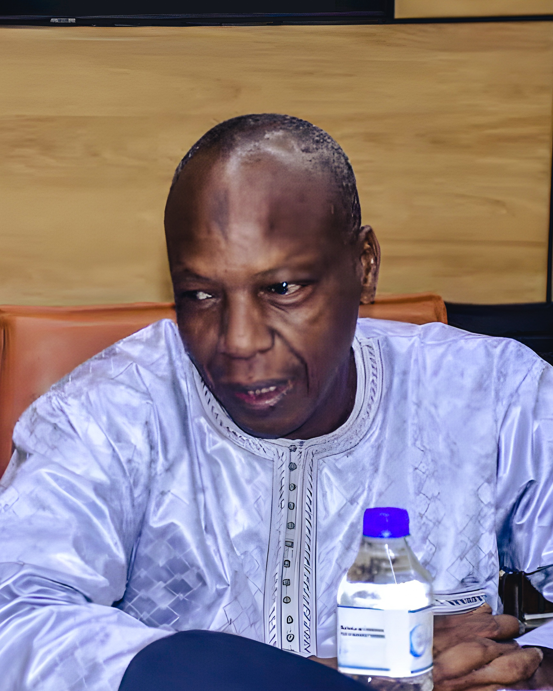

La sécurité, comme architecture de la paix.
Bienvenue sur le site de NS4PEACE, votre cabinet d'expertise en sécurité intérieure et gouvernance. Sous la direction du Contrôleur Général de Police Mody NDIAYE, nous offrons des services de formation et de conseil adaptés aux besoins des entreprises et organisations internationales. Notre expertise s'appuie sur une riche expérience dans l'application de la loi et le conseil technique. Ensemble, œuvrons pour une meilleure sécurité et une gouvernance efficace.
Une lecture rigoureuse des paradigmes sécuritaires contemporains.
NS4Peace réunit trois entités complémentaires — recherche, formation et conseil stratégique — pour éclairer les enjeux de sécurité intérieure et inspirer des modes de prise en charge réellement bénéfiques aux populations.
-
i
Recherche
Méthodologies d'analyse des contextes nationaux et régionaux, au service de décideurs publics et privés.
-
ii
Formation
Renforcement de capacités des acteurs de la sécurité, conforme aux standards internationaux.
-
iii
Conseil
Accompagnement stratégique des autorités, entreprises et organisations sur des dossiers à forte sensibilité.
Cinq pratiques, une même exigence : produire de la décision juste.
-
001
Stratégie
Programmes de développement
Planification et gestion de programmes de développement des services de sécurité, de la conception au pilotage opérationnel.
-
002
Gouvernance
Politiques sécuritaires
Conception de politiques publiques conformes aux standards internationaux et adaptées aux réalités locales.
-
003
Formation
Renforcement de capacités
Formation et professionnalisation des acteurs de la sécurité, du commandement à l'opérationnel de terrain.
-
004
Diagnostic
Audit & vulnérabilités
Évaluation des systèmes de sécurité, cartographie des risques et identification des vulnérabilités structurelles.
-
005
Crise
Stratégie & réponse
Élaboration de stratégies et de réponses adaptées à des enjeux sécuritaires complexes ou émergents.
Une trajectoire au croisement de l'État, du multilatéral et du terrain.

Haut fonctionnaire de police, plus de 30 ans d'expérience au sein de la Police nationale sénégalaise — dont 15 années consacrées à la conception, la mise en œuvre et l'évaluation de politiques de sécurité intérieure en Afrique subsaharienne. Expert reconnu en gouvernance sécuritaire, coopération internationale et réforme institutionnelle des forces de sécurité.
-
2025 → aujourd'hui
Inspecteur des Services de Sécurité
Ministère de l'Intérieur et de la Sécurité publique — Sénégal.
-
2024 — 2025
Conseiller Technique Sécurité du Ministre
Ministère de l'Intérieur — Sénégal. Conseil National de Sécurité, accords de coopération.
-
2019 — 2022
Expert Technique Principal — PAASIT / Union Européenne
Tchad. Politique de formation des trois forces de sécurité intérieure : Police, Gendarmerie, Garde Nationale et Nomade.
-
2014 — 2019
Coordonnateur Académie RINLCAO & Conseiller spécial OFNAC
Réseau des Institutions Nationales de Lutte contre la Corruption en Afrique de l'Ouest. 13 pays membres.
-
2013
Directeur de la Police de l'Air et des Frontières
Sénégal. Pilotage stratégique, déploiement de 360 officiers, renseignement transfrontalier.
-
2008 — 2010
Conseiller Spécial Résident — ONUDC
Guinée-Bissau. Programme national anti-drogue et crime organisé, plan opérationnel financé UE.
-
2006 — 2008
Coordonnateur de Programme — ONUDC
Programme régional de Contrôle des Conteneurs (Ghana, Cap-Vert, Bénin, Togo) — coopération avec l'Amérique latine.
-
2004 — 2005
Chef des Opérations — Police Civile ONUCI
Mission des Nations Unies en Côte d'Ivoire. Réintégration des combattants démobilisés.
-
Avant 2004
Conseiller Technique du DGPN · Chef du Commissariat du Plateau (Dakar) · Coordonnateur Adjoint du Comité Interministériel de Lutte contre la Drogue · Chef de la Brigade des Affaires Criminelles.
Commissaire de Police — ENP Dakar · Gestion de crise — Louisiana State Police Academy · Licence Droit public & relations internationales — UCAD · National Defense University, Fort Knox · Certified Fraud Examiner.
Recherche, évaluation, formation : un même protocole d'exigence.
-
01
Lire le contexte
Analyse approfondie des contextes nationaux et régionaux pour saisir la véritable structure du risque.
-
02
Évaluer le système
Protocoles d'évaluation conçus sur mesure : cartographie, audit, mise au jour des angles morts.
-
03
Formuler la stratégie
Recommandations stratégiques et opérationnelles, hiérarchisées, traçables, exécutables.
-
04
Accompagner la décision
Mise en œuvre, formation des équipes, transmission : la décision se tient dans la durée.
Nous travaillons avec celles et ceux qui décident.
- Autorités & services de sécurité intérieure
- Organisations internationales & bailleurs
- Entreprises, dirigeants, chefs de projets
- Leaders communautaires & collectivités
Un dossier sensible, un programme à structurer, une formation à concevoir ?
Nous accueillons les demandes confidentielles. Réponse personnelle sous 72 heures ouvrées.
- Direction
- Mody NDIAYE — Contrôleur Général de Police
- papecmody@gmail.com
- Implantation
- Dakar · Sénégal